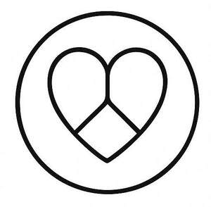
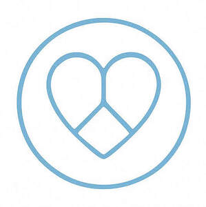
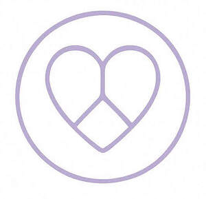
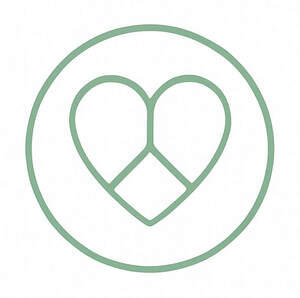
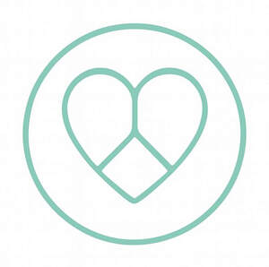

Trade Mark Journal No.2025/046 14 November 2025
UK00004276003 10 October 2025 (3,4,5,9,16,25,35,41,44,45)
Mark 1

Mark 2
Mark 3

Mark 4

Mark 5

Mark 6

- Class 3
- Creams (Cosmetic -); Cosmetic creams; Cosmetics and cosmetic preparations; Sunscreens [for cosmetic use]; Cosmetic moisturisers; Cosmetic soaps; Sunscreen [for cosmetic use]; Cosmetic facial lotions; Facial lotions [cosmetic]; Cosmetic soap; Lotions for cosmetic purposes; Cosmetic masks; Tonics [cosmetic]; Dyes (Cosmetic -); Cosmetic dyes; Facial creams [cosmetic]; Facial creams [for cosmetic use]; Cosmetic powder; Cosmetic preparations; Anti-aging creams [for cosmetic use]; Cosmetic pencils; Pencils (Cosmetic -); Facial cleansers [cosmetic]; Anti-ageing creams [for cosmetic use]; Cosmetic kits; Kits (Cosmetic -); Facial moisturisers [cosmetic]; Anti-wrinkle creams [for cosmetic use]; Cosmetic skin fresheners; Lacquer for cosmetic purposes; Skin creams [for cosmetic use]; Pro-collagen for cosmetic purposes; Cosmetic creams for the skin; Skin creams [cosmetic]; Henna for cosmetic purposes; Facial cream [for cosmetic use]; Serums for cosmetic purposes; Skin balms [cosmetic]; Skin cleansers [cosmetic]; Cosmetic tanning preparations; Collagen for cosmetic purposes; Cosmetic skin enhancers; Cosmetic hair lotions; Cleansing creams [cosmetic]; Cosmetic rouges; Facial scrubs [cosmetic]; Self-tanning preparations [cosmetic]; Facial toners [cosmetic]; Lip coatings [cosmetic]; Pomades for cosmetic purposes; Suncare lotions [for cosmetic use]; Skin cream [for cosmetic use]; After-sun lotions [for cosmetic use]; Anti-ageing serums for cosmetic purposes; Cosmetic creams and lotions; Anti-wrinkle cream [for cosmetic use]; Toning creams [cosmetic]; Adhesives for cosmetic purposes; Cosmetic sun-protecting preparations; Acne cleansers, cosmetic; Astringents for cosmetic purposes; Glitter for cosmetic purposes; Cosmetic facial masks; Facial masks [cosmetic]; Facial washes [cosmetic]; Sunscreen creams [for cosmetic use]; Cosmetic sunscreen preparations; Lip stains for cosmetic purposes; Toners for cosmetic purposes; Facial packs [cosmetic]; Cosmetic facial packs; Geraniol for cosmetic purposes; Skin care lotions [cosmetic]; Cosmetic nail preparations; Cosmetic massage creams; Retinol cream for cosmetic purposes; Eyelashes (Cosmetic preparations for -); Cosmetic preparations for eyelashes; Cosmetic suntan lotions; Cosmetic suntan preparations; Cosmetic hand creams; Skin toners [cosmetic]; Skin hydrators for cosmetic purposes; Cosmetic products for the shower; Cosmetic creams for skin care; Skin care creams [cosmetic]; Procollagen for cosmetic purposes; Pencils for cosmetic purposes; Cosmetic eye gels; Gels for cosmetic purposes; Hair care creams [for cosmetic use]; Hair care lotions [for cosmetic use]; Exfoliating scrubs for cosmetic purposes; Cosmetic sun-tanning preparations; Hair tonics [for cosmetic use]; Tooth powders [for cosmetic use]; Cosmetic preparations for slimming purposes; Slimming purposes (Cosmetic preparations for -); Self tanning creams [cosmetic]; Cosmetic nourishing creams; Skin care (Cosmetic preparations for -); Cosmetic preparations for skin care; Skin conditioning creams for cosmetic purposes; Ointments for cosmetic use; Moisturising skin lotions [cosmetic]; Moisturising gels [cosmetic]; Suntan oils for cosmetic purposes; Self tanning lotions [cosmetic]; Softening cleanser [cosmetic]; Cotton for cosmetic purposes; Moisturising concentrates [cosmetic]; Cosmetic face powders; Face powders [for cosmetic use]; Lint for cosmetic purposes; Cosmetics; Cosmetic eye pencils; Essences for cosmetic purposes; Artificial nails for cosmetic purposes; Sun creams [for cosmetic use]; Removable tattoos for cosmetic purposes; Perfumed powders [for cosmetic use]; Skincare cosmetics; Anti-aging skincare preparations; Anti-aging moisturizers used as cosmetics; Skincare preparations; Moisturisers [cosmetics]; Skin moisturizers used as cosmetics; Anti-aging moisturizers; Anti-ageing moisturiser; Cosmetic products in the form of aerosols for skincare; Beauty serums; Non-medicated skincare preparations; Moisturising skin creams [cosmetic]; Suncare lotions; Beauty serums with anti-ageing properties; Facial creams [cosmetics]; Anti-aging creams; Anti-ageing creams; Skin moisturisers; After-sun oils [cosmetics]; Skin care cosmetics; Beauty lotions; Skin moisturizers; Skin moisturizer; Skin moisturiser; Beauty care cosmetics; Skin recovery creams [cosmetics]; Skin cleansers; Skin masks [cosmetics]; Moisturiser; Moisturizers; Self-tanning preparations [cosmetics]; Skin moisturizer masks; Anti-ageing serum; Hairstyling serums; Facial moisturizers; Exfoliants for the care of the skin; Body and facial creams [cosmetics]; Exfoliants for the cleansing of the skin; Non-medicated skin serums; Skin care oils [cosmetic]; Anti-aging serum for cosmetic use; Moisturising body lotion [cosmetic]; Beauty creams; Beauty balm creams; Lotions for the skin; Skin lotions; Skin fresheners [cosmetics]; After-sun milks [cosmetics]; Skin cleansing lotion; Body creams [cosmetics]; Skin whitening creams; Creams (Skin whitening -); Tanning oils [cosmetics]; Skin make-up; Sun care lotions [for cosmetic use]; Suntan lotion [cosmetics]; Exfoliating creams; Skin cleansers [non-medicated]; After-sun milk [cosmetics]; Hair moisturisers; Moisturizing creams; Creams for tanning the skin; Aromatherapy creams; Cosmetics for use in the treatment of wrinkled skin; Skin lotion; Cosmetics for use on the skin; Anti-aging cream; Skin hydrators; Organic cosmetics; Aromatherapy lotions; Night creams [cosmetics]; Cleansing lotions; After-sun lotions; Facial gels [cosmetics]; Facial cleansers; Anti-wrinkle creams; Hair care serums; Beauty creams for body care; Cosmetic preparations for skin firming; Moisturising creams; Exfoliant creams; Cosmetic products in the form of aerosols for skin care; Moisturizing preparations for the skin; Skin creams; Creams for the skin; Colour cosmetics for the skin; Cosmetics for suntanning; Hair moisturizers; Facial lotions; Hydrating creams for cosmetic use; Herbal extracts for cosmetic purposes; Non-medicated preparations for the relief of sunburn; Scalp treatments (Non-medicated -); Recovery creams for cosmetic use; Hair strengthening treatment lotions; Bath herbs; Dandruff shampoos, not for medical purposes; Hair preparations and treatments; Hair desiccating treatments for cosmetic use; Non-medicated cleansing creams.
- Class 4
- Tealight candles; Candle wax; Candles; Votive candles; Candles and wicks for candles for lighting; Wicks for candles; Scented candles; Wicks for candles for lighting; Candles and wicks for lighting; Tea light candles; Candles for lighting; Fragranced candles; Tallow candles; Nightlights [candles]; Candles for use as nightlights; Table candles; Soy candles; Candles in tins; Perfumed candles; Candles (Perfumed -); Christmas lights [candles]; Aromatherapy fragrance candles; Wax for making candles; Church candles; Candles for night lights; Floating candles; Christmas tree candles; Candles (Christmas tree -); Beeswax for use in the manufacture of candles; Musk scented candles; Fruit candles; Tealights; Wicks (Lamp -); Christmas tree ornaments for illumination [candles]; Bougies in the nature of wax candles; Christmas tree decorations for illumination [candles]; Candles for use in the decoration of cakes; Grave candles, non-electric; Special occasion candles; Tea lights.
- Class 5
- Massage candles for therapeutic purposes; Medicated massage candles; Bath tea for therapeutic purposes; Ear candles for therapeutic purposes; Hypnotic sedatives; Dietary supplements promoting fitness and endurance; Fitness and endurance supplements; Dietetic foods for use in clinical nutrition; Homeopathic supplements; Homeopathic medicines; Herbal medicine; Probiotic preparations for medical use to help maintain a natural balance of flora in the digestive system; Homeopathic anti-inflammatory ointments; Homeopathic pharmaceuticals; Nutritional supplements for veterinary use; Cleansing solutions for medical use; Preparations for use in naturopathy; Natural dietary supplements for treating claustrophobia; Pharmaceuticals and natural remedies; Moisturising creams [pharmaceutical]; Serums; Mosquito-repellent incense; Dietary supplement drinks; Vitamin supplement patches; Dietary supplements; Vitamin supplements; Nutritional supplements; Calcium tablets as a food supplement; Dietary supplement drink mixes; Probiotic supplements; Flaxseed dietary supplements; Colostrum supplements; Dietary supplements consisting of vitamins; Nutritional supplement meal replacement bars for boosting energy; Zinc supplement lozenges; Calcium supplements; Propolis dietary supplements; Dietary supplements for medical use; Prebiotic supplements; Herbal supplements; Chlorella dietary supplements; Powdered nutritional supplement drink mix; Anti-oxidant supplements; Dietary supplements in powder form; Dietary and nutritional supplements; Protein supplement shakes; Lecithin dietary supplements; Zinc dietary supplements; Ground flaxseed fiber for use as a dietary supplement; Nutritional supplement energy bars; Mineral dietary supplements; Nutritional supplements consisting primarily of magnesium; Dietary supplements consisting primarily of magnesium; Liquid dietary supplements; Protein supplements; Food supplements; Protein dietary supplements; Enzyme dietary supplements; Dietary supplements consisting primarily of calcium; Nutritional supplements consisting primarily of calcium; Mineral nutritional supplements; Dietary food supplements; Liquid nutritional supplements; Feed supplements for veterinary use; Yeast dietary supplements; Liquid vitamin supplements; Alginate dietary supplements; Linseed dietary supplements; Vitamin and mineral supplements; Acai powder dietary supplements; Casein dietary supplements; Nutritional supplements consisting primarily of zinc; Powdered nutritional supplement energy drink mix; Anti-oxidant food supplements; Flaxseed oil dietary supplements; Pollen dietary supplements; Food supplements for dietetic use; Glucose dietary supplements; Albumin dietary supplements; Nutritional supplements consisting primarily of iron; Wheat dietary supplements; Dietary supplements consisting primarily of iron; Protein powder dietary supplements; Powdered fruit-flavored dietary supplement drink mix; Dietary supplements with a cosmetic effect; Dietary supplements for infants; Vitamin and mineral food supplements; Food supplements for veterinary use; Nutritional supplements for livestock feed; Vitamin supplements for animals; Nutritional supplements consisting of fungal extracts; Dietary food supplements used for modified fasting; Vitamin and mineral supplements for pets; Whey protein dietary supplements; Dietary supplements for animals; Liquid herbal supplements; Dietary supplements for humans; Herbal dietary supplements for persons special dietary requirements; Fodder supplements for veterinary purposes; Soy isoflavone dietary supplements; Dietary supplements and dietetic preparations; Vitamin preparations in the nature of food supplements; Health food supplements made principally of vitamins; Soy protein dietary supplements; Bee pollen for use as a dietary food supplement; Health-aid foods supplement containing red ginseng; Food supplements for medical purposes; Dietary supplements and dietetic preparations containing CBD oil; Brewer's yeast dietary supplements; Food supplements in liquid form; Nutritional supplements made of starch adapted for medical use; Mineral dietary supplements for animals; Energy gels (dietary supplements); Mineral dietary supplements for humans; Linseed oil dietary supplements; Activated charcoal dietary supplements; Dietary supplemental drinks; Food supplements for non-medical purposes; Food supplements for sportsmen; Folic acid dietary supplements; Dietary supplements for pets in the nature of a powdered drink mix; Health-aid foods supplements containing ginseng; Dietary supplements for controlling cholesterol; Medicated food supplements; Mineral supplements for feeding livestock; Dietary supplements for humans not for medical purposes; Health food supplements made principally of minerals; Health food supplements for persons with special dietary requirements; Ganoderma lucidum spore powder dietary supplements; Royal jelly dietary supplements; Protein supplements for animals; Preparations for supplementing the body with essential vitamins and microelements; Pine pollen dietary supplements; Multivitamins; Food supplements consisting of trace elements; Anti-oxidants for dietary use; Wheat germ dietary supplements; Diet capsules; Food supplements consisting of amino acids; Nutritional drink mix for use as a meal replacement; Vitamin supplements for use in renal dialysis; Delivery agents in the form of dissolvable films that facilitate the delivery of nutritional supplements; Flaxseed meal for pharmaceutical purposes; Medicated supplements for animal feedstuffs; Strengthening supplements containing parapharmaceutical preparations for prophylactic purposes and for convalescents; Multi-vitamin preparations; Vitamin tablets; Vitamin drinks; Vitamin drops; Vitamin preparations; Vitamin and mineral preparations; Prenatal vitamins; Vitamin C preparations; Vitamin A preparations; Effervescent vitamin tablets; Vitamin D preparations; Vitamin B preparations; Mixed vitamin preparations; Gummy vitamins; Antioxidant pills; Vitamin enriched bread for therapeutic purposes; Preparations of vitamins; Antioxidants; Vitamins for animals; Nutraceuticals for use as a dietary supplement; Vitamins for pets; Multivitamin preparations; Cod-liver oil capsules; Anti-oxidants obtained from herbal sources; Calcium fortified candy; Iodine; Remedies for perspiration; Corn remedies; Remedies for foot perspiration; Foot perspiration (Remedies for -); Elixirs for relieving colds; Herbal anti-itch ointments for pets; Constipation (Medicines for alleviating -); Medicines for alleviating constipation; Tonics [medicines]; Herbal creams for medical use; Anti-inflammatory salves; Herbal sore skin ointments for pets; Elixirs for preventing colds; Medicine tonics; Medicinal ointments; Elixirs for eczema; Medicinal creams for the protection of the skin; Elixirs for relieving asthma; Anti-inflammatory ointments; Herbal teas for medicinal purposes; Medicines for the treatment of gastrointestinal diseases; Medicinal herbal extracts for medical purposes; Acne medications; Medicated lotions for treating dermatological conditions; Acne treatment preparations; Preparations for the treatment of acne; Herbal preparations for medical use; Herbal beverages for medicinal use; Elixirs for psoriasis; Medicinal herbs; Herbs (Medicinal -); Medicated creams for treating dermatological conditions; Extracts of medicinal herbs; Antiallergic medicines; Herbal extracts for medical purposes; Decoctions of medicinal herb; Herbal detoxification agents; Herbs for medicinal purposes; Herbal tea for medicinal use; Medicines for prevention against milk fever; Niacinamide preparations for the treatment of acne; Anti-itch ointments; Acne creams [pharmaceutical preparations]; Acne cleansers [pharmaceutical preparations]; Medicinal creams for skin care; Poultices; Medicinal preparations for the treatment of infectious diseases; Antidotes; Pharmaceutical preparations for the treatment of digestive diseases; Medicines for treating intestinal disorders; Sunburn ointments; Herb teas for medicinal purposes; Preparations for treating colds; Motion sickness medicines; Liniments; Scalp treatments (Medicated -); Anti-itch creams; Antibiotic ointments; Tonics for medical use; Astringents for medical use; Antibacterial acne preparations; Antiseptic ointments; Allergy relief medication; Medicinal herb extracts; Medicated ointments for application to the skin; Pain relief medication for veterinary purposes; Creams for dermatological use; Ginseng for medicinal use; Elixirs for preventing throat infections; Antihemorrhoidal ointments; Dysmenorrhea treatment preparations; Mouthwashes [gargles] for medical purposes; Sulfonamides [medicines]; Antibiotics for detoxification purposes; Topical analgesic creams; Deodorants for clothing and textiles; Clothing (Deodorants for -) and textiles; Textiles (Deodorants for clothing and -); Deodorants for clothing.
- Class 9
- Digital recordings; Digital recording media; Downloadable digital music; Digital music downloadable from the Internet; Downloadable digital photos; Digital books downloadable from the Internet; Downloadable computer software for use as a digital wallet; Downloadable digital assets; Digital music downloadable provided from the internet; Digital music downloadable provided from MP3 internet websites; Digital music downloadable provided from a computer database or the internet; Digital music downloadable provided from MP3 internet web sites; Downloadable digital music provided from MP3 Internet web sites; Digital music [downloadable] provided from mp3 web sites on the internet; Digital audio servers; Digital video recorders; Digital video players; Downloadable digital music files authenticated by non-fungible tokens [NFTs]; Downloadable music files; Computer software downloadable from the internet; Digital electronic controllers; Electronic sheet music, downloadable; Downloadable digital image files authenticated by non-fungible tokens (NFTs); Downloadable image files; Downloadable software; Downloadable e-books; Downloadable electronic game software for wireless devices; Digital notepads; Downloadable electronic games; Digital audio tape recorders; Downloadable electronic newspapers; Downloadable electronic brochures; Digital televisions; Downloadable video recordings; Mobile apps; Mobile application software; Application software for mobile phones; Downloadable smart phone application software; Smartphone software; Application software for mobile devices; Smartphone software applications, downloadable; Downloadable application software for smart phones; Computer application software for mobile phones; Downloadable software in the nature of a mobile application; Downloadable smart phone applications (software); Mobile software; Downloadable software applications for mobile phones; Application software for smart phones; Downloadable computer software for use as an application programming interface (API); Mobile device management software; Software for mobile device management; Software for mobile phones; Downloadable mobile applications; Application software for smart TV; Software and applications for mobile devices; Downloadable emoticons for mobile phones; Downloadable applications for use with mobile devices; Downloadable applications for mobile devices; Software applications for use with mobile devices; Software applications for mobile devices; Downloadable mobile applications for booking taxis; Web application software; Downloadable software in the nature of a mobile application for playing games; Computer game software for use on mobile devices; Downloadable application software; Electronic game software for mobile phones; Application software; Downloadable mobile applications for use with wearable computer devices; Computer software for mobile applications that enable interaction and interface between vehicles and mobile devices; Downloadable graphics for mobile phones; Software for online messaging; Application software for wireless devices; Computer application software for mobile telephones; Web application and server software; Mobile phone covers; Downloadable ringtones for mobile phones; Computer game software for use on mobile and cellular phones; Computer software for mobile phones; Application software for robot; Downloadable mobile applications for the management of data; Computer software for application and database integration; Augmented reality software for use in mobile devices; Downloadable software in the nature of a mobile application for food delivery and ordering; Downloadable instant messaging software; Software for smartphones; Educational mobile applications; Mobile phone cases; Downloadable video game software; Computer screen saver software, recorded or downloadable; Computer application software for use with wearable computer devices; Mobile phone screen protectors; Downloadable application software for virtual environments; Computer programs and software for image processing used for mobile phones; Application software for televisions; Interface software; Video game software; Display modules for mobile phones; Computer games programs downloaded via the internet [software]; Internet messaging software; Downloadable game software; Downloadable computer game software via a global computer network and wireless devices; Downloadable game related software applications; Interactive software; Downloadable emoticons for mobile telephones; Platform software; Downloadable computer game software; Computer game software, downloadable; Printed circuit cards; Flexible printed circuits; Printed cards [magnetic]; Printing fonts that can be downloaded provided by means of electronic transmission; Printed cards [encoded]; Electronic publications; Publications in electronic format; Downloadable electronic publications in the nature of magazines; Downloadable educational course materials; Reflective apparel and clothing for the prevention of accidents; CDs; Downloadable posters; Mousepads; Downloadable virtual clothing; Downloadable virtual headwear; CD storage wallets; Pre-recorded CDs featuring music; Binders for CDs; Blank CDs; Electronic parking lot ticket dispensers.
- Class 16
- Prayer books; Water-writing cloths for calligraphy practice; Exercise books; Writing brush for Shodo; Printed matter; Printed books; Omikuji [sacred lots] [printed strips of paper used for fortune telling]; Printed booklets; Printed visuals; Printed flyers; Printed pamphlets; Printed cards; Printed paper signs; Printed promotional material; Printed brochures; Printed recipe cards; Printed informational cards; Printed teaching material; Printed informational sheets; Printed cardboard invitations; Printed paper invitations; Printed guides; Photographs [printed]; Printed photographs; Printed paper labels; Printed stationery; Printed music; Printed invitations; Printed informational flyers; Printed newsletters; Printed leaflets; Printed tickets; Printed packaging materials of paper; Diaries [printed matter]; Printed information sheets; Printed reports; Flow sheets [printed matter]; Printed certificates; Printed vouchers; Comic strips [printed matter]; Printed lessons; Printed advertisements; Printed horoscopes; Printed music books; Printed calendars; Printed manuals; Printed price lists; Printed publications; Publications (Printed -); Cartoon strips [printed matter]; Printed patterns; Printed advertising boards of paper; Printed answer sheets; Printed plans; Printed stories in illustrated form; Printed diagrams; Printed periodicals; Printed tables; Printed educational materials; Printed sheet music; Printed lectures; Forms, printed; Printed forms; Printed art reproductions; Printed charts; Printed menus; Sheet music in printed form; Printed teaching materials; Printed timetables; Timetables (Printed -); Planners [printed matter]; Printed advertising boards of cardboard; Printed paper signs featuring table numbers for use for special events; Fine paper; Printed greeting cards with electronic information stored therein; Printed paper signs featuring names for use for special events; Posters made of paper; Printed consumer reports; Printed awards; Printed correspondence course materials; Printed informational folders; Printed comic strips; Printed questionnaires; Printed emblems; Printed cartoon strips; Printed programmes; Partially printed forms; Adhesive printed labels; Printed material in the nature of color samples; Printed training materials; Printed news releases; Offset printing paper for pamphlets; Printed curricula; Computer software in printed form; Printed flip charts; Software programmes in printed form; Computer programmes in printed form; Printed mail response cards; Journals; Blank journal books; Publication paper; Blank writing journals; Blank journals; Magazine paper; Medical journals; Trade journals; Legal journals; Notebook paper; Printed periodical publications; Periodical publications; Writing paper; Paper; Writing paper holders; Paper book markers; Directory paper; Art paper; Periodical magazines; Note paper; Blank paper notebooks; Scrapbook pages; Letter paper; Paper stationery; Document holders being articles of stationery; Writing paper pads; Binder paper; Paper report covers; Note papers; Book-cover paper; Printed research reports; Paper folders; Paper folders [stationery]; Label paper; Daily newspaper; Paper tags; Newsprint paper; Calligraphy paper; Manuscript books; Paper stock [printing paper]; Shelf paper; Magazine supplements for newspapers; Postcard paper; Wirebound books; Photocopy paper; Stencil paper [mimeograph paper]; Ledger books; Graph paper; Drawing paper; Vellum paper; Invitation cards; Paper loyalty cards; Greeting cards; Gift cards; Cards; Announcement cards; Note cards; Musical greeting cards; Social note cards; Picture cards; Name cards; Reference cards; Motivational cards; Blank note cards; Announcement cards [stationery]; Card files; Post cards; Occasion cards; Blank cards; Greetings cards; Card indexes; Anniversary cards; Filing cards; Advertisement boards of card; File cards; Correspondence cards; Printed seminar notes; Paper teaching materials; Albums; Fanzines.
- Class 25
- Yoga tops; Yoga shoes; Yoga bottoms; Yoga socks; Yoga pants; Yoga shirts; Printed t-shirts; Bibs, sleeved, not of paper; Training shoes; Training suits; Gloves for apparel; Jerseys [clothing]; Clothing; Sportswear; Athletic clothing; Clothing for sports; Sports clothing; Ready-to-wear clothing; Jackets being sports clothing; Knitwear [clothing]; Sports garments; Parts of clothing, footwear and headgear; Men's clothing; Embroidered clothing; Jackets [clothing]; Triathlon clothing; Woolen clothing; Sports clothing [other than golf gloves]; Headbands [clothing]; Headbands for clothing; Leisure clothing; Layettes [clothing]; Clothing layettes; Casual clothing; Clothing for leisure wear; Garments for protecting clothing; Denims [clothing]; Cashmere clothing; Clothing for cycling; Shorts [clothing]; Footwear for sports; Sports footwear; Golf clothing, other than gloves; Footwear; Aprons [clothing]; Athletic footwear; Wristbands [clothing]; Visors [clothing]; Gloves [clothing]; Gloves as clothing; Leather clothing; Clothing of leather; Leather (Clothing of -); Clothing for gymnastics; Windproof clothing; Plush clothing; Playsuits [clothing]; Quilted jackets [clothing]; Outerwear; Fishing clothing; Mufflers [clothing]; Athletics footwear; Clothing for skiing; Latex clothing; Knitted clothing; Silk clothing; Furs [clothing]; Water-resistant clothing; Linen clothing; Shoes for leisurewear; Clothes for sports; Woven clothing; Articles of sports clothing; Women's clothing; Dance clothing; Footwear for women; Footwear for men; Ready-made clothing; Footwear for sport; Footwear for use in sport; Corsets [clothing, foundation garments]; Footwear [excluding orthopedic footwear]; Party hats [clothing]; Maternity clothing; Jackets (Stuff -) [clothing]; Stuff jackets [clothing]; Muffs [clothing]; Belts [clothing]; Belts for clothing; Footwear for snowboarding; Leisure footwear; Veils [clothing]; Bandeaux [clothing]; Golf footwear; Beach clothing; Rainproof clothing; Casual footwear; Collars [clothing]; Moisture-wicking sports shirts; T-shirts; Tee-shirts; Short-sleeved T-shirts; Shirts; Wristbands; Stuff jackets; Aloha shirts; Casual shirts; Turtleneck shirts; Hoodies; Long-sleeved shirts; Short-sleeve shirts; Football shirts; Maternity shirts; Dress shirts; Hunting shirts; Sweatshirts; Short-sleeved shirts; Maternity bands; Woven shirts; Soccer shirts; Pique shirts; Shirts and slips; Night shirts; Sports shirts; Rugby shirts; Bandanas; Paper hats for use as clothing items; Sweat shirts; Ramie shirts.
- Class 35
- Digital marketing; Digital advertising services; Online retail services for downloadable digital music; Retail services relating to downloadable digital image files authenticated by non-fungible tokens [NFTs]; Online retail services for downloadable and pre-recorded music and movies; Advertisement via mobile phone networks; Dissemination of advertising material [leaflets, brochure and printed matter]; Dissemination of advertising material [leaflets, brochures and printed matter]; Distribution of printed advertising matter; Distribution of printed promotional material by post; Publication of printed matter for advertising purposes in electronic form; Electronic publication of printed matter for advertising purposes; Publication of printed matter for advertising purposes; Arranging subscriptions to electronic journals; Publication of advertising literature; Newspaper subscriptions; Reproduction of records [paper]; Providing academic course administration services relating to online course registration; Providing academic course administration services relating to on-line course registration; Organisation and conducting of product presentations; Trade show and exhibition services; Conducting virtual trade show exhibitions online; Business meeting planning; Product demonstration services in shop windows by live models; Business management consultancy in the field of executive and leadership development; Business management of retail outlets; Retail store services in the field of clothing; Online retail store services in relation to clothing; Online retail store services relating to clothing; Retail services in relation to confectionery; Unmanned retail store services relating to food; Retail services connected with the sale of furniture; Unmanned retail store services relating to drink; Retail services in relation to footwear; Retail services in relation to beer; Retail services in relation to jewellery; Retail services in relation to furnishings; Retail services in relation to clothing; Retail services in relation to saddlery; Retail services in relation to furniture; Retail services in relation to bakery products; Retail services in relation to seafood; Retail services in relation to smartphones; Retail services relating to jewelry; Retail services in relation to chocolate; Retail services in relation to downloadable virtual footwear; Retail services in relation to coffee; Retail services relating to furniture; Retail services in relation to toys; Retail services in relation to lighting; Online retail services relating to jewelry; Retail services connected with stationery; Management of a retail enterprise for others; Online retail services for downloadable virtual clothing; Retail services in relation to cocoa; Online retail services relating to clothing; Retail of third-party pre-paid cards for the purchase of clothing; Online retail services relating to cosmetics; Retail services relating to candy; Retail services relating to clothing; Retail services relating to food; Retail services in relation to cookware; Retail services in relation to bags; Retail services in relation to fashion accessories; Retail of third-party pre-paid cards for the purchase of entertainment services; Retail services in relation to pet products; Retail services in relation to games; Retail services in relation to metal hardware; Business management of wholesale outlets; Retail services in relation to headgear; Retail services in relation to desserts; Retail services in relation to downloadable virtual clothing; Online retail services relating to toys; Online retail services in relation to downloadable virtual footwear; Retail services in relation to fabrics; Retail services in relation to tableware; Online retail store services relating to cosmetic and beauty products; Retail services in relation to gardening products; Retail services in relation to downloadable virtual headwear; Retail services in relation to foodstuffs; Online retail services relating to handbags; Retail services in relation to clothing accessories; Online retail services in relation to downloadable virtual clothing; Mail order retail services for cosmetics; Retail services in relation to wearable computers; Mail order retail services for clothing; Retail services in relation to paints; Retail services relating to home textiles; Retail services in relation to non-alcoholic beverages; Retail services in relation to teas; Retail services in relation to luggage; Retail services in relation to umbrellas; Retail services in relation to frozen yogurts; Retail services in relation to educational supplies; Retail services relating to flowers; Retail services in relation to hair products; Retail services in relation to festive decorations; Advertising the goods and services of online vendors via a searchable online guide; Online advertising; Online marketing; Online ordering services; Online retail services in relation to downloadable virtual handbags; Providing a searchable online advertising guide featuring the goods and services of other on-line vendors on the internet; Online advertisements; Providing a searchable online advertising guide featuring the goods and services of online vendors; Online retail services in relation to downloadable virtual headwear; Online retail services in relation to downloadable virtual works of art; Online advertising services; Online business networking services; Arranging commercial transactions, for others, via online shops; On-line advertising; Online retail services for downloadable ring tones; Online retail services relating to luggage; On-line auctioneering services via the Internet; On-line auctioneering; Providing online marketplaces for sellers of goods and or services; Providing searchable online advertising guides; On-line promotion of computer networks and websites; Rental of advertising space on-line; Retail services in relation to dietary supplements; Wholesale services in relation to dietary supplements; Advertising services relating to pharmaceuticals for the treatment of diabetes; Retail services connected with the sale of clothing and clothing accessories; Mail order retail services for clothing accessories; Inventorying merchandise; Merchandising; Merchandizing; Display services for merchandise; Promotion [advertising] of concerts; Promotion of musical concerts; Product merchandising; Carrying out auction sales; Sales promotions at point of purchase or sale, for others; Promoting the sale of fashion goods through promotional articles in magazines; Sales promotion; Publicity and sales promotion; Promoting the sale of goods and services of others through the distribution of printed material and promotional contests; Preparing promotional and merchandising material for others; Promotional marketing; Trade marketing [other than selling]; Arranging of auction sales; Auction sales (Arranging of -); Retail services via catalogues related to beer.
- Class 41
- Providing digital music [not downloadable] from MP3 internet websites; Providing digital music [not downloadable] from the internet; Providing digital music [not downloadable] for the internet; Digital music [not downloadable] provided from the internet; Providing digital music [not downloadable] from MP3 internet web sites; Providing digital music [not downloadable] for mp3 internet web sites; Digital music [not downloadable] provided from mp3 web sites on the internet; Providing digital sound recordings, not downloadable, from the internet; Providing digital music from mp3 internet web sites; Providing digital music from the internet; Online digital publishing services; Digital video, audio and multimedia entertainment publishing services; Meditation training; Teaching of meditation practices; Yoga instruction; Training in yoga; Education services relating to meditation; Bodywork therapy instruction; Aikido instruction; Shodo instruction; Fitness and exercise instruction; Sado instruction [tea ceremony instruction]; Exercise instruction; Pilates instruction; Tea ceremony instruction; Teaching of music; Conducting workshops and seminars in self awareness; Education services relating to yoga; Conducting training sessions on physical fitness online; Educational seminars relating to beauty therapy; Instruction in group exercise; Calligraphy instruction; Life coaching (training); Exercise classes; Instruction in music; Music instruction; Exercise and fitness classes; Training services relating to the therapy of primary cause analysis by hypnosis; Self-awareness courses [instruction]; Arranging and conducting of workshops and seminars in self-awareness; Conducting classes in exercise; Conducting workshops and seminars in art appreciation; Conducting of workshops and seminars in art appreciation; Training in philosophy; Conducting workshops and seminars in personal awareness; Conducting physical fitness conditioning classes; Beauty arts instruction; Keep-fit instruction; Tuition in acupuncture; Producing and conducting exercises for music classes and programmes; Religious training; Teaching of life saving techniques; Teaching of chinese martial arts; Chiropractic instruction; Physical fitness instruction; Demonstration [training] in painting and decorating techniques; Painting instruction; Exercise [fitness] training services; Fitness and exercise training services; Perceptual teaching services; Instruction in martial arts; Martial arts instruction; Jujitsu instruction; Photography instruction; Online game services through mobile devices; Mobile library services; Library services (Mobile -); Publishing of interactive computer and video game software; Publication of printed matter and printed publications; Publishing of printed matter; Hire of printed matter; Publication of printed matter; Publication of printed matter, other than publicity texts, in electronic form; Publication of printed matter, other than publicity texts; Publication of educational printed matter; Publication of printed matter in electronic form; Publication of printed matter, also in electronic form, except for advertising purposes; Publication of printed matter in electronic form on the Internet; Publication and editing of printed matter; Editing of printed matter containing pictures, other than for advertising purposes; Electronic publication of texts and printed matter, other than publicity texts, on the Internet; Multimedia publishing of printed matter; Providing online comic books, not downloadable; Rental of printed publications; Publication of journals; Publishing of journals; Online publication of electronic books and journals; Publication of electronic books and journals online; On-line publication of electronic books and journals; Publication of electronic books and journals on-line; Publication of books, magazines, almanacs and journals; Multimedia publishing of journals; On-line publication of electronic books and journals (non-downloadable); Publishing of journals, books and handbooks in the field of medicine; Publishing of electronic books and journals online; Newspaper publication; Publishing of electronic books and journals on-line; On-line publication of electronic books and journals [not downloadable]; Multimedia publishing of magazines, journals and newspapers; Publication of periodicals; Publication of magazines; Magazines (Publication of -); Publishing of scientific papers; Publication of books; Books (Publication of -); Publication of electronic magazines; Publication of newspapers; Magazine publishing; Electronic online publication of periodicals and books; Publication of calendars; Publication of text books; Publication of periodicals and books in electronic form; Electronic publication; Publication of printed directories; Publication of textbooks; Newspaper publishing; Online publication of electronic newspapers; Publication of instructional literature; Publishing of medical publications; Publishing of electronic publications; Publication of music books; Publication of booklets; Book and review publishing; Publication of year books; Publication of music; Publication of photographs; Publication of texts; Publication of books, reviews; Publication of audio books; Publication of electronic books and periodicals on the Internet; Publication of educational books; Publication of catalogs; Publication of medical texts; Book publishing; Online electronic publishing of books and periodicals; Publication of sheet music; Publication of catalogues; Issue of publications; Publishing of books, magazines; Publication of posters; Publication of consumer magazines; Publication of manuals; Multimedia publishing of electronic publications; Publishing services for periodical and non-periodical publications, other than publicity texts; Publication of calendars of events; Publication of fact sheets; Publication of newspapers, periodicals, catalogs and brochures; Publication of prospectuses; Publishing scientific papers in relation to medical technology; Publishing of scientific papers in relation to medical technology; Publication of brochures; Publication of directories relating to travel; Publication of educational texts; Publication of online reviews in the field of entertainment; Publishing of newspapers; Publishing of web magazines; Services for the publication of magazines; Publishing of books; Vocational education; Health education; Education and training; Education and instruction; Services of schools [education]; Education services; University education services; Education academy services; Academy education services; Education, teaching and training; Vocational education and training services; Music education; Training and education services; Education and training services; Education and instruction services; Education examination; Provision of education courses; Educational services for providing courses of education; Career counseling [education]; Teaching of diet education; Higher education services; Provision of training and education; Provision of education and training; Providing of education; Physical education; Education academy services for teaching languages; Entertainment, education and instruction services; Education information; Information (Education -); Education academy services for teaching art history; Medical education services; Education services relating to vocational training; Computer education training; Primary education services; Adult education services; Musical education services; Physical health education; Online education services; Lingual education; Provision of physical education; Management education services; Education services relating to nutrition; Education services relating to health; Education services related to the arts; Dietary education services; Singing education; Club education services; Education and training in the field of music and entertainment; Education and training services in the field of occupational health and safety; Adult education services relating to medicine; Research in the field of education; Adult education services relating to finance; Providing continuing nursing education courses; Education and training in the field of occupational health and safety; Education information services; Guidance (Vocational -) [education or training advice]; Vocational guidance [education or training advice]; Education services for imparting language teaching methods; Secondary school educational services; Education services relating to medicine; Sporting education services; Education, entertainment and sport services; Education services relating to business training; Educational and teaching services; Education courses relating to the travel industry; Training or education services in the field of life coaching; Providing continuing legal education courses; Career counselling [training and education advice]; Vocational education relating to first aid; Adult education services relating to law; Education in the field of computing; Blindness prevention education services; Vocational education for young people; Provision of education courses relating to electronics; Education, entertainment and sports; Education services relating to conservation; Adult education services relating to commerce; Education services relating to music; Education in the field of occupational health and safety; Career advisory services (education or training advice); Adult education services relating to banking; Provision of education courses relating to telecommunications; Education services relating to commerce; English language education services; Education in the field of computing science; Education services relating to industry; Education services relating to hygiene; Provision of facilities for education; Residential education courses relating to archery; Provision of education courses relating to computers; Educational services provided by institutes of further education; Education services relating to the cinema; Education in movement awareness; Adult education services relating to management; Organization of education competitions; Education services relating to fashion; Education services relating to sports; Education services relating to photography; Organization of competitions [education or entertainment]; Competitions (Organization of -) [education or entertainment]; Organization of competitions for education or entertainment; Education services relating to banking; Educational and training services relating to healthcare; Education and training in the field of business management; Education services relating to conservation of the environment; Providing education courses relating to the travel industry; Education services relating to food technology; Foreign language education services; Education and training in the field of automotive engineering; Training; Training and further training consultancy; Coaching [training]; Training courses; Vocational training; Training and instruction; Personnel training; Training consultancy; Employment training; Training services; Education and training consultancy; Vocational skills training; Organisation of training seminars; Organisation of training courses; Organisation of training; Advanced training; Practical training; Training in catering; Training of teachers; Providing training; Providing of training; Providing courses of training; Conducting training seminars; Sports training; Training in sports; Wood-working training; Fitness training services; Instruction in weight training; Business training; Provision of training; Training courses (Provision of -); Provision of training courses; Instructional and training services; Career and vocational training; Continuous training; Conducting workshops [training]; Horse training; Vocational training services; Language training; Personal coaching [training]; Computerised training; Arranging of training courses; Aerobics training services; Adult training; Teacher training services; Workshops for training purposes; Residential training courses; Written training courses; Training in electronics; Physical training services; Training in the use of computers; Strength and conditioning training; Arranging professional workshop and training courses; Voice training; Provision of training courses in personal development; Health and fitness training; Training services relating to fitness; Correspondence courses; Conducting of courses; Arrangement of training courses in teaching institutes; Distance learning courses; Preparation of educational courses and examinations; Conducting courses, seminars and workshops; Conducting of educational courses; Educational courses (Provision of -); Conducting instructional courses; Arranging of courses of instruction; Providing online courses of instruction; Correspondence courses, distance learning; Conducting of educational courses in business; Residential education courses relating to abseiling; Residential education courses relating to canoeing; Educational courses relating to design; Personal development courses; Conducting training courses relating to nutrition online; Instruction courses relating to health; Conducting of educational courses in business management; Conducting training courses relating to diet online; Correspondence courses relating to cookery; Arranging and conducting of educational courses; Instruction courses relating to sporting activities; Educational courses relating to the travel industry; Residential education courses relating to hill walking; Conducted basic literacy courses (Provision of -); Provision of instruction courses in general management; Conducting of educational courses relating to business; Providing courses of training for young people; Organisation of courses using distance learning methods; Provision of courses of instruction relating to sport; Arranging of workshops and seminars; Arranging of workshops; Arranging and conducting of seminars and workshops; Arranging and conducting of workshops and seminars; Workshops (Arranging and conducting of -) [training]; Arranging and conducting of workshops [training]; Arranging and conducting of training workshops; Conducting educational workshops in the field of business; Arranging, conducting and organisation of workshops; Conducting workshops [training] relating to engine repair; Workshops for educational purposes; Arranging and conducting of workshops; Arranging and conducting workshops; Seminars; Organising of educational seminars; Organisation of seminars; Training (Practical -) [demonstration]; Practical training [demonstration]; Organising of education seminars; Conducting workshops [training] relating to engine maintenance; Conducting of instructional seminars; Workshops for cultural purposes; Organisation of educational seminars; Educational seminars; Workshops for recreational purposes; Organising of business training; Educational seminars relating to hairdressing techniques; Conducting training seminars for clients; Production of course material distributed at professional seminars; Providing online training seminars; Special event planning consultation; Organisation of Webinars; Conducting of instructional seminars relating to time management; Organising of meetings in the field of education; Arranging of demonstrations for training purposes; Organisation of symposia relating to training; Organising of educational exhibitions; Organisation, production and presentation of theatrical performances; Organising of education conferences; Organisation of meetings and conferences; Demonstration of hairdressing products for training purposes; Conducting of seminars and congresses; Production of course material distributed at professional lectures; Educational services for teaching manual writing; Organisation of conferences relating to vocational training; Presenting museum exhibitions; Arranging and conducting of lectures for training purposes; Arranging, conducting and organization of seminars; Conducting of classes; Production and presentation of radio programmes; Presentation of concerts; Publication of training manuals; Organising of education exhibitions; Arranging and conducting of seminars; Coaching; Sports coaching; Career counselling and coaching; Coaching services; Sports coaching services; Personal coaching services in the field of ballet; Political speech training and coaching; Career counselling relating to education and training; Training in business skills; Team building (education); Personal fitness training services; Personal development training; Online computer game services; Online gaming services; Online research library services; Online reference library services; On-line gaming services; Provision of online tutorials; Providing online video games; On-line computer games; Online interactive entertainment; On-line publishing services; On-line entertainment; Providing online electronic publications; Providing on-line computer games; Providing online music, not downloadable; On-line library services, namely, providing electronic library services which feature newspapers, magazines, photographs and pictures via an on-line computer network; Entertainment services provided on-line from a computer database or the internet; Provision of education on-line from a computer database or via the internet or extranets; Game services provided on-line from a computer network; Providing online publications, not downloadable; Health and wellness training; Health club services [health and fitness training]; Health and fitness club services; Health club [fitness] services; Physical fitness education services; Health club services [exercise]; Provision of educational health and fitness information; Sports and fitness services; Providing of training in the field of health care and nutrition; Physical fitness training services; Health club services; Physical fitness consultation; Education services relating to physical fitness; Physical fitness centre services; Educational services relating to physical fitness; Education services relating to therapeutic treatments; Educational services in the nature of coaching; Educational services relating to beauty therapy; Education services relating to ayurvedic magnetism; Educational services relating to spiritual development; Production of music concerts; Ticket reservation and booking services for music concerts; Reservation services for concert tickets; Music concerts; Theatre and concert tickets reservation services; Reservation services for concert and theatre tickets; Rental of artwork; Reservation services for show tickets; Booking of seats for shows and booking of theatre tickets; Production of music shows.
- Class 44
- Health spa services; Health counseling; Health care relating to relaxation therapy; Mental health services; Beauty care services provided by a health spa; Health care relating to therapeutic massage; Health center services; Health clinic services; Health care in the nature of health maintenance organizations; Health resort services [medical]; Mental health screening services; Health care relating to hydrotherapy; Health consultancy; Health centers; Health counselling; Health care; Cosmetic body care services provided by health spas; Beauty spa services; Health clinic services [medical]; Health care relating to acupuncture; Medical treatment services provided by a health spa; Personality testing [mental health services]; Health care consultancy services [medical]; Health screening services; Occupational health consultancy; Medical spa services; Health centre services; Home health care services; Nutrition counseling; Providing mental health rehabilitation facilities; Health screening; Medical health assessment services; Public health counseling; Personality assessment services [mental health services]; Health assessment services; Health screening services in the field of asthma; Health farm services [medical]; Health care relating to osteopathy; Health hydro services; Health care relating to homeopathy; Consultancy relating to health care; Beauty therapy services; Health centres; Spa services; Consulting services relating to health care; Consultancy services relating to health care; Health care relating to remedial exercise; Lifestyle counseling and consultancy for medical purposes; Beauty care services; Health care relating to fasting; Hygienic and beauty care services; Health care services for treating Alzheimer's disease; Professional consultancy relating to health care; Advisory services relating to health care; Health screening services in the field of sleep apnea; Consultancy in the field of body and beauty care; Nutrition and dietetic consultancy; Nutrition counselling; Managed health care services; Provision of health care services; Pet beauty salon services; Holistic psychotherapy; Medical testing services, namely, fitness evaluation; Human hygiene and beauty care; Beauty treatment services; Nutrition consultancy; Beauty care; Medical testing for fitness evaluation; Health care services for assisting individuals to stop smoking; Aromatherapy services; Information services relating to health care; Food nutrition consultation; Health care services offered through a network of health care providers on a contract basis; Hygienic and beauty care; Fitness testing; Health care relating to naturopathy; Homeopathic clinical services; Alternative medicine services; Ayurveda therapy; Regenerative medicine services; Professional consultancy relating to nutrition; Beauty counselling; Psychological care; Counselling relating to the psychological treatment of medical ailments; Professional consultancy relating to health; Therapeutic treatment of the body; Professional consultancy relating to diet; Counselling relating to nutrition; Consultation services relating to beauty care; Providing health care information via a global computer network ; Providing information about dietary supplements and nutrition; Psychological diagnosis services; Medical care and analysis services relating to patient treatment; Reiki services; Psychological treatment; Consultancy services in the field of nutrition; Consultancy provided via the Internet in the field of body and beauty care; Provision of hygienic and beauty care services; Consultancy services relating to nutrition; Providing health information; Psychotherapy services; Slimming treatment services; Beauty consultation services; Meditation services; Physiotherapy [physical therapy]; Providing information relating to traditional Japanese massage; Nutritional advisory and consultation services; Personal therapeutic services relating to circulatory improvement; Chiropractic; Beauty consultancy; Consultancy relating to nutrition; Counselling relating to the psychological relief of medical ailments; Treatment of allergies.
- Class 45
- Mentoring [spiritual]; Spiritual consultancy; Conducting religious prayer services; Religious prayer services; Spiritual advice; Astrological and spiritual services; Counselling relating to spiritual direction; Mediation; Bereavement counseling; Bereavement counselling; Pastoral counselling; Psychic reading services; Online social networking services accessible by means of downloadable mobile applications; Licensing of printed matter; Online social networking services; Foster care.
DKEM Limited